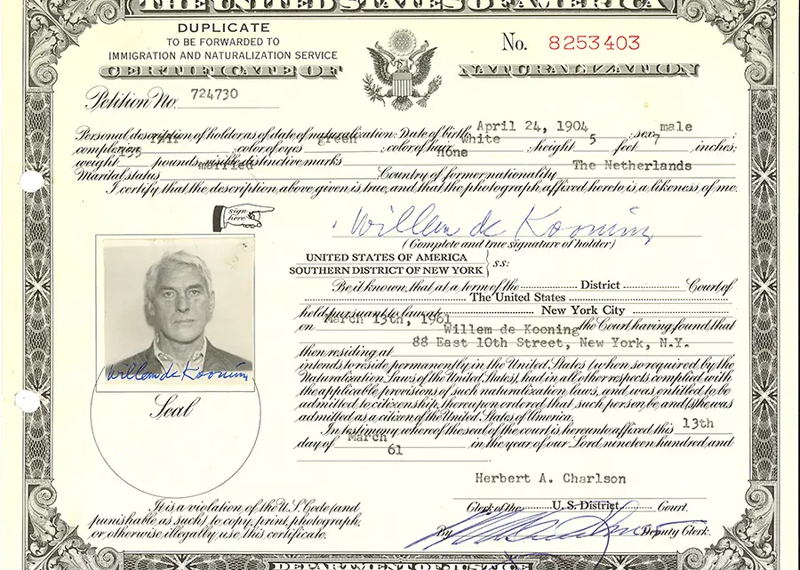

Before you begin
Under Law 74/2025 (effective March 28, 2025), Italian citizenship by descent is now limited to applicants with an Italian-born parent or grandparent. If your only Italian ancestor is a great-grandparent, you are not eligible to file a new application. If you're unsure which generation applies to you, this guide will help you find out.
Step 1: Determine if you are eligible
The central question in any Jure Sanguinis case is whether your Italian ancestor was still legally an Italian citizen at the time their child was born. If yes, Italian citizenship was transmitted to that child — and ultimately to you, provided the chain was never broken.
The most common way the chain breaks is through naturalization: if your Italian-born ancestor became a U.S. citizen before their child was born, citizenship generally did not pass. So the first thing to determine is: when, if ever, did your ancestor naturalize?
Gather your ancestor's U.S. residence history
Start by listing all the places your Italian ancestor lived after arriving in the U.S. — states, cities, and counties. Note approximate dates, especially for the period when they would have been most likely to naturalize (typically 5–10 years after arrival). This tells you which archives to search.
Search for naturalization records
The primary resources for U.S. naturalization records are:
- The National Archives (NARA) — the most comprehensive federal resource for immigration and naturalization records from the 19th and early 20th centuries
- The USCIS Genealogy Program — for more recent naturalization records (post-1906)
- State and county archives — before 1906, naturalization could be processed by any court, so local records are often critical
- Ancestry.com and FamilySearch — digitized census data, passenger lists, and naturalization indexes that can confirm whether an ancestor was listed as an "alien" or "U.S. citizen" in census years
Search all known name variants and birth dates to ensure thorough coverage. Census data is not legally definitive but can provide strong clues.
Step 2: Interpret what the records show
Once you have the records (or confirmation that none exist), your situation will typically fall into one of these categories:
No record of naturalization — or they never naturalized
This is the best scenario. If your ancestor never became a U.S. citizen, they remained an Italian citizen their entire life and transmitted that status to every child born after them. You will need a formal Certificate of Non-Existence (from USCIS or the relevant agency) for your application file to document this conclusively.
Naturalized after their child turned 21
If your ancestor became a U.S. citizen after their child was already an adult (21 or older), the child was not automatically included in the naturalization. Italian citizenship was already transmitted, and the chain is intact.
Naturalized before their child was born
If naturalization occurred before the relevant child was born, Italian citizenship was not transmitted to that child under standard Jure Sanguinis rules. The chain is generally broken. However, if a female ancestor in your lineage naturalized through marriage (prior to 1948), a 1948 court case may still be possible — see below.
Naturalized while a child was a minor (before 1992)
If your ancestor naturalized before 1992 and their child was under 21 at the time, the child may have been automatically included in that naturalization, losing their Italian citizenship. This is a nuanced area — the exact outcome depends on the year and specific circumstances — and it's worth reviewing with our team before concluding you're ineligible.
Naturalized in 1992 or later
After August 15, 1992, Italy formally permitted dual citizenship. Ancestors who naturalized at this point or later generally retained the ability to pass Italian citizenship to their children.
Female ancestor who married a foreign man before 1948
Under Italian law at the time, women automatically lost their Italian citizenship upon marrying a foreign national. If this woman is in your lineage and her child was born before January 1, 1948, you have what is called a 1948 case. These cases require a court petition (not a consulate application) but have strong legal precedent and are regularly won. See our guide to 1948 cases for details.
Step 3: Identify your application route
Once you've confirmed eligibility, you need to choose your route:
Consulate route
For most North Americans, applying through the Italian consulate in your jurisdiction is the standard path. It does not require travel to Italy but currently takes 3–5 years due to high demand. Your entire case file — including all lineage documents — must be apostilled, translated, and submitted to the consulate.
Relocation to Italy (municipality route)
If you can live in Italy for the duration of the process, applying at a local comune (municipality) is significantly faster — often 6–12 months. This route requires establishing legal residency in Italy and attending appointments in person.
Court route (ATQ or 1948 cases)
If you cannot secure a consulate appointment or your case involves a 1948 female ancestor, the court route is available. An ATQ (Against the Queue) filing bypasses the consulate backlog entirely. A licensed Italian attorney files on your behalf in Rome. Court cases typically resolve in 1–3 years.
Step 4: Assemble your documents
Every Jure Sanguinis application requires a complete documentary chain from your Italian ancestor to you. This includes:
- Birth, marriage, and death certificates for your Italian ancestor
- Birth, marriage, and death certificates for every direct ancestor between them and you
- Your own birth certificate (long-form)
- Naturalization records — or a Certificate of Non-Existence — for your Italian ancestor
- For 1948 cases: naturalization records for both the female ancestor and her foreign spouse
All non-Italian documents must be apostilled, certified, and translated into Italian. Consulate and court requirements vary — see our complete documents checklist for a full breakdown by situation.

Step 5: Reach out to confirm eligibility
We only move forward with clients who are legally eligible, which means we provide an honest assessment before any commitment. If you're unsure about any part of the eligibility determination above — particularly around naturalization dates or 1948 scenarios — book a free call with our team and we'll walk through your specific lineage with you.